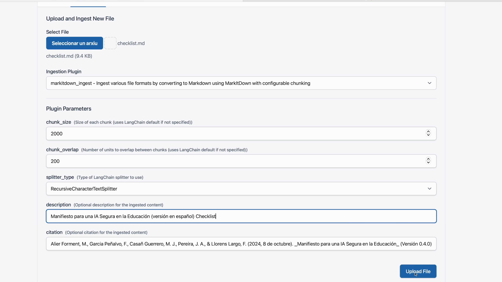

Tutorial rápido de LAMB #
Objetivo: en menos de 15 minutos tendrás un asistente de aprendizaje que utiliza tus propios documentos y estará disponible dentro de tu curso de Moodle.
1. Registro y acceso #
- Ve a
https://lamp.lamp-project.org. - Pulsa Sign Up y completa el formulario (nombre, correo, contraseña, Secret Key que te facilita la coordinación).
2. Conoce el panel principal #
Al entrar verás tres secciones clave:
- My Assistants – donde vives tus bots.
- Knowledge Bases – tus bases semánticas.
- Open Web UI – la interfaz de chat.

3. Crea tu primer asistente #
- En My Assistants pulsa New.
- Pon un nombre (p. ej. Demo), describe su misión y elige el modelo (GPT-4o, Mistral, etc.).
- Guarda.

4. Prueba rápida del asistente #
Haz clic en el icono de chat para conversar y comprobar que responde.

5. Crea una base de conocimiento #
- Abre Knowledge Bases ► New.
- Marca la base como Private y guarda.
 #
#
6. Ingesta de documentos #
- Dentro de tu base pulsa Markdown Ingest (por ahora el método más estable).
- Arrastra PDFs, DOCX o archivos
.md. - Mantén Chunk size ≈ 2000 para textos largos.

Tip: También puedes subir ficheros .ZIP siempre que contengan .pdf, .docx, .txt o .md.

Puedes consultar la base de conocimiento directamente:
7. Conecta la base a tu asistente #
- Vuelve a My Assistants y crea un asistente.
- En la plantilla busca la sección RAG y elige la base recién creada.
- Indica cuántos fragmentos (
k = 3suele bastar).
- Prueba tu asistente en OpenWebui.
8. Modo Debug (opcional pero útil) #
Clona el asistente, cambia el modelo a Bypass y activa Simple RAG para ver el prompt completo que LAMB envía al LLM.

9. Publica tu asistente como herramienta LTI #
Publicar tu asistente LTI te permitirá que tus alumnos accedan al asistente que has creado desde tu curso en Moodle u otro LMS.
Desde la vista de detalle de Asistente pulsa Publish.
Se generarán tres datos:
- Tool URL
- Consumer Key
- Shared Secret

10. Inserta el asistente en Moodle (LTI 1.1) #
- En tu curso ► Añadir actividad ► External Tool.
 2. Pega la Tool URL en Secure Tool URL.
3. Copia Consumer Key y Shared Secret.
4. Ajusta Launch container ► New window.
5. Guarda.
2. Pega la Tool URL en Secure Tool URL.
3. Copia Consumer Key y Shared Secret.
4. Ajusta Launch container ► New window.
5. Guarda.

11. Vista del estudiante #
Los alumnos acceden desde Moodle; ven solo ese bot y sus chats quedan almacenados en LAMB, cumpliendo la política de privacidad.